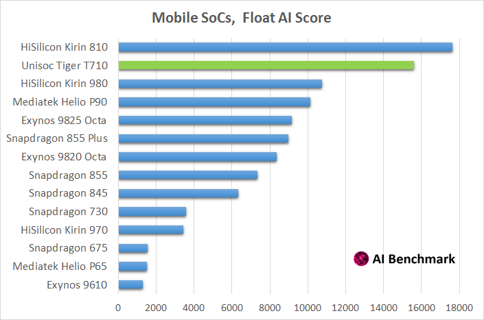
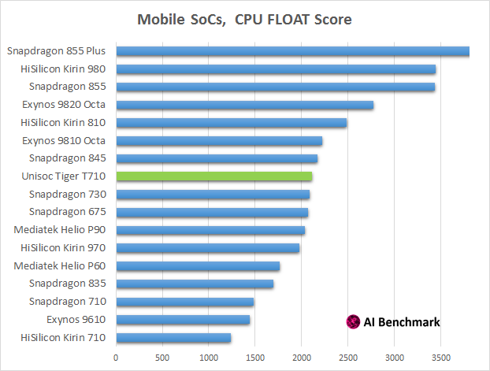
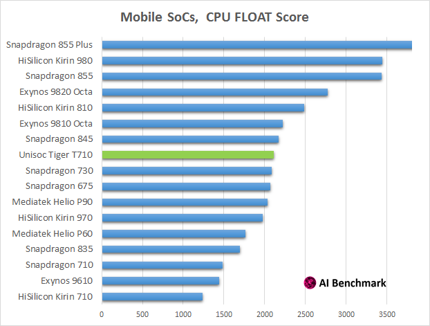

Spreadtrum Reborn: Performance Review of the Unisoc Tiger T710
For many years, Unisoc was holding a small share of the mobile SoC market and was mainly known for its budget processors for low-end Android devices. It looks like with its recent rebranding you should forget everything that you knew about it – while being a pre-release engineering sample, its new mid-range chipset is easily beating the giants of the SoC industry.
Below we present a detailed performance analysis of the Unisoc Tiger T710. Please note that this is a pre-release sample (also known as ud710_3h10_native), thus the results of the final commercial version might be slightly different.

AI Performance: Float & Quantized AI Models
Unisoc T710 has a dedicated NPU providing acceleration for both float and quantized AI models. This is probably the most impressive part of the new Tiger - for the most common float AI models, it is just slightly slower than Kirin 810 (featuring Huawei's next-gen DaVinci NPU), but outperforms all the rest SoCs by a huge margin: almost 50% performance boost compared to Snapdragon 855 Plus, Kirin 980, Helio P90 and Exynos 9825 Octa.

As for quantized AI models - Unisoc doesn't disappoint here too, easily outperforming all chipsets from Qualcomm, HiSilicon, MediaTek and Samsung. Yes, that's not a mistake - T710 is even faster than the Qualcomm's flagship presented this month, outmatching it in all performance categories:

On the charts above, one can see the average inference time and prediction error for several common AI models used in image classification, face recognition, image enhancement and super-resolution tasks. Tiger T710 is generally demonstrating a 30-70% advantage over Snapdragon 855 Plus in case of float inference, and comparable runtime for quantized models. But when it comes to inference accuracy, Qualcomm's chipset is completely falling behind the Unisoc, showing up to 12 times larger prediction errors in the corresponding tasks. While one can "boost" the performance by adding some specific software optimizations leading to faster computation speed at the cost of significantly degraded precision, Unisoc did not use this trick in its chipset – Tiger T710 is demonstrating very decent accuracy results in nearly all tests, fairly taking the first place.
CPU Performance
Unisoc's CPU configuration is quite typical for the upper mid-range SoC segment: four big Cortex-A75 cores clocked at 2.0GHz and four small Cortex-A55 cores clocked at 1.8GHz. The tests show that its integer performance lies between the results of Snapdragon 835 and 845 and is around 30% better than the performance of Snapdragon 730, Kirin 810 and Helio P90 playing in the same segment.
 

As for T710's float CPU performance, it is basically the same as in Qualcomm's and MediaTek's mid-range chipsets, and is around 20% lower compared to Kirin 810. So, on the whole, Unisoc T710 is performing at the level of the latest Kirin SoC and is slightly faster than both SDM730 and Helio P90, which should be enough to stay relevant for the next year or two.
Other Performance Aspects
Same as Helio P90, Unisoc T710 is using PowerVR GM 9446 GPU from Imagination Technologies that should be slightly faster than Adreno 616 present in the Snapdragon 710. This means that T710 shouldn't have any major problems on the GPU side as well, though it is not an ultimate gaming solution – just well enough for its segment.
In total, Tiger T710 is a very decent chip with the best overall AI performance one can get right now. Just recently, it was impossible to imaging some Unisoc chipset being at the top of the performance ranking, outrunning all competitive solutions. A miracle? Yes, quite close to that. Good GPU, excellent CPU and a really outstanding NPU – Tiger T710 is becoming one of the most interesting proposals in the mid-range SoC segment.
31 July 2019 Andrey Ignatov | AI Benchmark


{kind=link}
{kind=link}
{kind=link}
{kind=link}
{kind=link}
{kind=link}